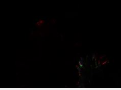

Obrazy wejściowe, na których wykonywane są algorytmy mieszania
private void button13_Click(object sender, EventArgs e)
{
Bitmap b1 = (Bitmap)pictureBox1.Image;
Bitmap b2 = (Bitmap)pictureBox2.Image;
Color k, k1, k2;
int r, g, b;
for (int i = 0; i < width; i++)
{
for (int j = 0; j < height; j++)
{
k1 = b1.GetPixel(i, j);
k2 = b2.GetPixel(i, j);
. // (miejsce na algorytm)
.
.
.
}
pictureBox2.Refresh();
}
 Obraz wynikowy sumy
Obraz wynikowy sumy
if (k1.R + k2.R > 255) r = 255;
else r = k1.R + k2.R;
if (k1.G + k2.G > 255) g = 255;
else g = k1.G + k2.G;
if (k1.B + k2.B > 255) b = 255;
else b = k1.B + k2.B;
b2.SetPixel(i, j, Color.FromArgb(r, g, b));
Obraz wynikowy odejmowania
r = k1.R + k2.R - 255;
g = k1.G + k2.G - 255;
b = k1.B + k2.B - 255;
if (r < 0) r = 0;
if (g < 0) g = 0;
if (b < 0) b = 0;
b2.SetPixel(i, j, Color.FromArgb(r, g, b));
Obraz wynikowy różnicy
r = Math.Abs(k1.R - k2.R);
g = Math.Abs(k1.G - k2.G);
b = Math.Abs(k1.B - k2.B);
Obraz wynikowy mnożenia
r = (k1.R * k2.R)/255;
g = (k1.G * k2.G)/255;
b = (k1.B * k2.B)/255;
if (r > 255) r = 255;
if (g > 255) g = 255;
if (b > 255) b = 255;
Obraz wynikowy mnożenia odwrotności
r = 255 - (((255 - k1.R) * (255 - k2.R)) / 255);
if (r > 255) r = 255;
if (r < 0) r = 0;
g = 255 - (((255 - k1.G) * (255 - k2.G)) / 255);
if (g > 255) g = 255;
if (g < 0) g = 0;
b = 255 - (((255 - k1.B) * (255 - k2.B)) / 255);
if (b > 255) b = 255;
if (b < 0) b = 0;
Obraz wynikowy negacji
r = 255 - Math.Abs(255 - k1.R - k2.R);
g = 255 - Math.Abs(255 - k1.G - k2.G);
b = 255 - Math.Abs(255 - k1.B - k2.B);
Obraz wynikowy "ciemniejsze"
if (k1.R < k2.R)
{
r = k1.R;
}
else r = k2.R;
if (k1.G < k2.G)
{
g = k1.G;
}
else g = k2.G;
if (k1.B < k2.B)
{
b = k1.B;
}
else b = k2.B;
Obraz wynikowy "jaśniejsze"
if (k1.R > k2.R)
{
r = k1.R;
}
else r = k2.R;
if (k1.G > k2.G)
{
g = k1.G;
}
else g = k2.G;
if (k1.B > k2.B)
{
b = k1.B;
}
else b = k2.B;
Obraz wynikowy "wyłączenie"
r = k1.R + k2.R - 2 * ((k1.R * k2.R) / 255);
g = k1.G + k2.G - 2 * ((k1.G * k2.G) / 255);
b = k1.B + k2.B - 2 * ((k1.B * k2.B) / 255);
Obraz wynikowy "nakładka"
if(k1.R < (255 / 2))
{
r = 2 * ((k1.R * k2.R) / 255);
} else r = 255 - 2 * (((255 - k1.R) * (255-k2.R))/255);
if (k1.G < (255 / 2))
{
g = 2 * ((k1.G * k2.G) / 255);
}
else g = 255 - 2 * (((255 - k1.G) * (255 - k2.G)) / 255);
if (k1.B < (255 / 2))
{
b = 2 * ((k1.B * k2.B) / 255);
}
else b = 255 - 2 * (((255 - k1.B) * (255 - k2.B)) / 255);
Obraz wynikowy "ostre światło"
if (k2.R < 0) r = (2 * k1.R * k2.R) / 255;
else r = 255 - (2 * (255 - k1.R) * (255 - k2.R)) / 255;
if (r < 0) r *= -1;
if (k2.G < 0) g = (2 * k1.G * k2.G) / 255;
else g = 255 - (2 * (255 - k1.G) * (255 - k2.G)) / 255;
if (g < 0) g *= -1;
if (k2.B < 0) b = (2 * k1.B * k2.B) / 255;
else b = 255 - (2 * (255 - k1.B) * (255 - k2.B)) / 255;
if (b < 0) b *= -1;

Obraz wynikowy "wypalenie"
if (255 - k2.R != 0)
{
r = k1.R / (255 - k2.R);
}
else r = k1.R / 10;
if (255 - k2.G != 0)
{
g = k1.G / (255 - k2.G);
}
else g = k1.G / 10;
if (255 - k2.B != 0)
{
b = k1.B / (255 - k2.B);
}
else b = k1.B / 10;
Obraz wynikowy "reflect mode"
if (255 - k2.R == 0) r = 0;
else r = (k1.R * k1.R) / (255 - k2.R);
if (r > 255) r = 255;
if (255 - k2.G == 0) g = 0;
else g = (k1.G * k1.G) / (255 - k2.G);
if (g > 255) g = 255;
if (255 - k2.G == 0) b = 0;
else b = (k1.B * k1.B) / (255 - k2.B);
if (b > 255) b = 255;